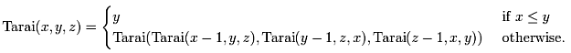
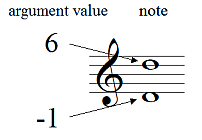
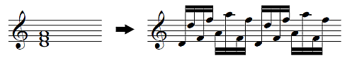

May 2, 2013 by aike
Tarai Function Music is an approach of algorithmic composition based on tarai function. It automatically generates a complex and very long music from a simple formula.
The following is an implementation of tarai function music written in JavaScript. [source code]
Tarai function is a recursive function devised by Ikuo Takeuchi in 1978. This function processes so many recursion function calls. So it is often used as a programming language benchmarking.
I tried to assign the function's arguments to music notes. For example, the minimum argument value (-1) converts to D, next value (0) converts to E, ... Thus the three arguments are assigned to the triad of D Dorian mode .
Next, the triad chord notes are mapped arpeggio sequence pattern, like this.
In this way, It generates arpeggio notes in every recursion function call.